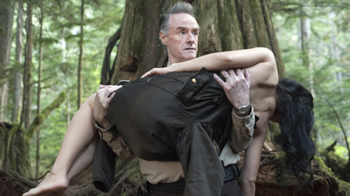

Deputy Andy meets an angel, a demon shows up in a bar and Monica Bellucci is a literal woman of our dreams.

You never know how and when Twin Peaks will push you to the brink of tears – all you know is that it will. Perhaps it happened in this week's episode when FBI Director Gordon Cole recalled the last sighting of his old partner, Agent Phillip Jeffries – played by David Bowie, shown alive and well 25 years ago in a clip from Fire Walk With Me. Maybe it was when Sarah Palmer staggered into a local bar for a drink, all but begging a loudmouth goon down the bar to leave her alone. (This scene takes a radical left turn from there, but still.)
Or maybe the moment that got you may have been when the vortex in the sky opened up and none other than Deputy Andy Brennan traveled to the world beyond. Yes, our good-hearted, simple-minded hero is rewarded at last for a lifetime of kindness with a glimpse of the strange but benevolent being who's working to stop the spread of the Black Lodge's evil. Seeing Andy in that backwards-talking land was like the granting of a wish you didn't know you had.
Formerly known as the Giant and credited throughout the season so far as "???????", the towering spirit played by Carl Struycken tells Andy he is "the Fireman." This moniker is resonant with Twin Peaks mythology, in which evil and fire are all but synonymous, right down to the atomic explosion that birthed the demonic Bob. In fact, the good deputy gets a glimpse of that event – as well as the Woodsman (still looking for a light!), Laura Palmer, Coop and his evil Coop-pelganger and more. When he reappears in our world, he's carrying the eyeless woman, billed as Naido in the credits, in his arms. "She's very important," he tells his fellow sheriffs, "and people want her dead."
The flipside to Andy's stairway to heaven is Sarah Palmer's ongoing descent into hell – a journey, it seems, that's literal as well as psychological. When the matriarch is hit on by a barfly, it sounds as if she can barely get out the words to reject him: "Would you sit back where you were," she she stammers. "Please." He turns vulgar, and potentially violent, at which point actor Grace Zabriskie's eyes go wide. Then Mrs. Palmer reaches up … and takes her own face off, revealing a void inhabited by snake-like tongue, a ghostly hand, and an enormous, terrible grin. "Do you really want to fuck with this?" growls her voice from within. She puts her face back on. And then she bites an enormous chunk out of her harasser's neck. When the bartender comes over to see what happened, Sarah turns cold. "Sure is a mystery, huh?"
It's a horrifying scene, and not just for the obvious reasons. The Black Lodge is not just a supernatural locus of darkness; it's an opportunistic infection that enters our world where our boundaries are worn thin by all-too-human evil. A quarter of a century ago, Mrs. Palmer was helpless to stop her possessed husband from assaulting and killing her daughter Laura (and other young women too) before the entity inside him devoured the man in turn. How do you recover from that? The allegorical answer offered in this scene, and its vision of corruption beneath the surface, is that you don't. The Lodge, which first used her as its mouthpiece during a scene you may have forgotten from the original series finale, has eaten her away from within. (And while it's tempting to wish that Laura had her mother's powers when facing any of the men who abused her, you should recall that the original series' posthumous heroine chose death rather than allowing that kind of evil to inhabit her.)
But as always, there's more to Twin Peaks than just absolute heaven and pure hell. Take the long opening sequence staring Gordon, Albert, Tammy and the duplicitous Diane. In some ways, it's just a multi-part infodump: We learn how Gordon and Phillip Jeffries founded the top-secret "Blue Rose" unit; we discover that Janey-E Jones is Diane's estranged sister (we're pulling for a Laura Dern/Naomi Watts "family reunion" before all is said and done!); and we're now brought up to speed on the events of Fire Walk With Me.
But none of this takes into account the goofball comedy peppered throughout: Gordon's dumbfounded telephone conversation with Lucy Brennan; the exact match between Diane's garish jacket and the upholstery of the chair she sits in; or the freaked-out reaction of the Las Vegas FBI agents tasked with tracking down Janey-E and Dougie. Best of all? Cole informing everyone "I HAD ANOTHER MONICA BELLUCCI DREAM," a hilarious European art-film pastiche set in Paris, with the glamorous Italian movie star appearing as herself.
And if you know your viral videos, this isn't even the episode's funniest cameo. That honor belongs to Jake Wardle, the British YouTuber whose clip "The English Language in 24 Accents" racked up 27 million views and caught Lynch's attention. This led to his role as Freddie Sykes, a friend and co-worker of James Hurley who's been granted superhuman strength by a green rubber glove the Fireman told him to purchase. This goofiness segues into the episode's sinister closing minutes, in which James travels into the frightening furnace room of the Great Northern Hotel and a pair of young women at the Roadhouse discuss the mysterious, frequently mentioned Billy and Tina. So why include Freddie's bizarre story at all? To paraphrase the giant's own explanation: Why not? Twin Peaks can, and does, do anything it wants. That's its magic.